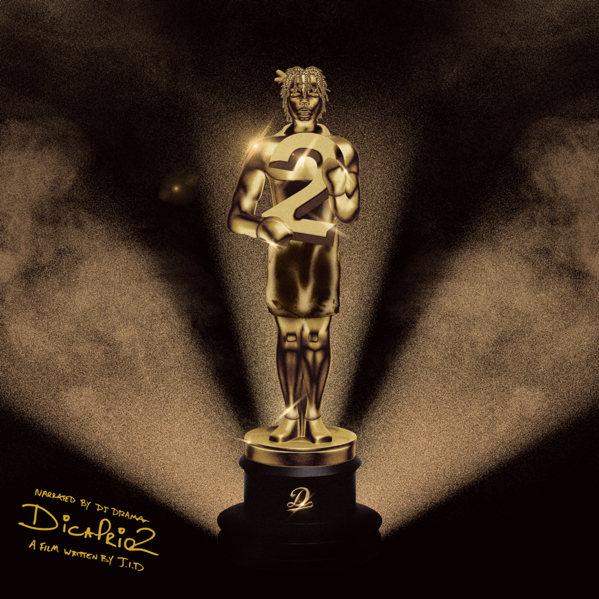

JID, Clipse, Pusha T, No Malice, Vince Staples, Westside Gunn, Ciara, EARTHGANG, Ty Dolla $ign, Jessie Reyes, Baby Kia, Mereba, Pastor Troy
From the mind of Grammy-nominated rapper and performer, JID, his new studio album is a testament to prioritizing lyricism and artistry above all else. In a year where Hip Hop is championing the genre’s most compelling storytellers, JID carries the torch for South-East Atlanta, its stories and people coming this summer.
The Forever Story (2022)
JID, 21 Savage, Kenny Mason, EARTHGANG, Lil Durk, Baby Tate, Lil Wayne, Yasiin Bey
From the mind of Grammy-nominated rapper and performer, JID, his new studio album is a testament to prioritizing lyricism and artistry above all else. In a year where Hip Hop is championing the genre’s most compelling storytellers, JID carries the torch for South-East Atlanta, its stories and people coming this summer.
The Forever Story (2022)
JID, 21 Savage, Kenny Mason, EARTHGANG, Lil Durk, Baby Tate, Lil Wayne, Yasiin Bey
JID's highly anticipated sophomore album The Forever Story presents his reality: a more personal look into his familial life and stories of growing up the last of seven and a student athlete in East ATL. JID’s nimble, head-nodding lyricism/ lightning-fast flow is present throughout the album with immersive storytelling and thoughtful guest features — all spotlighting his rightful space in rap as one of the greatest in the making.

DiCaprio2 (2018)
JID, J.Cole, A$AP Ferg, 6LACK, Joey Bada$$, Ella Mai, Method Man, BJ the Chicago Kid
DiCaprio 2 is the second studio album by American rapper JID, hosted by DJ Drama. It was released on November 26, 2018. Each song is designed to feel like a movie.